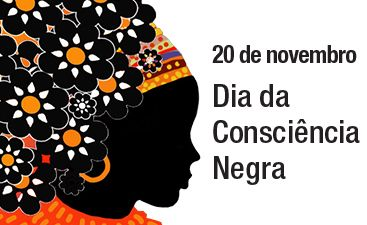

ASSISTA O VÍDEO
"O Dia Nacional de Zumbi e da Consciência Negra é um feriado nacional celebrado em 20 de novembro e foi instituído oficialmente pela Lei nº 12.519, de 10 de novembro de 2011. A data faz referência à morte de Zumbi, o então líder do Quilombo dos Palmares."
"Zumbi foi morto em 1695, na referida data, por bandeirantes liderados por Domingos Jorge Velho. Atualmente existe uma série de estudos que procuram reconstituir a biografia desse importante personagem da resistência à escravidão no Brasil."
